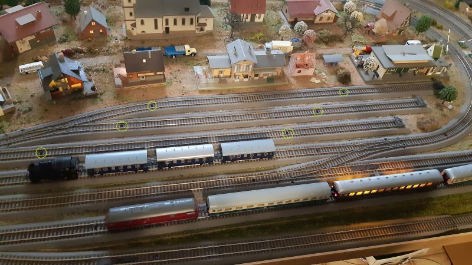
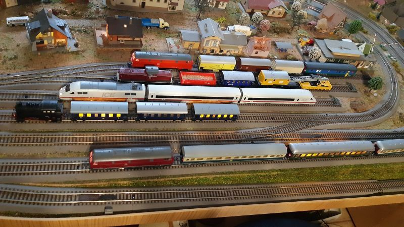

kostengünstige Schaltung für 40 x optische Rückmelder, für weniger als 40€, für jenen der gerne lötet und die Schaltung selbst baut.
Es können verschiedene Sensoren: optische Rückmelder, Reed Kontakte, Hallsensoren (z.B TLE4905) oder ... verwendet werden, welche einen Eingang nach 0V Masse verbinden.
Hinweis zum verwendeten optischen Sensor TCRT5000, direkte Sonneneinstrahlung auf diesen Sensor kann zu einer Fehlmeldungen führen!
Die Stromversorgung der s88-N Logik erfolgt mit 5V über den s88-N Bus, (eventuell 12V, aber nicht getestet)
zur Stromversorgung der Sensoren verwende ich ein eigenes 5V Stecker Netzteil.
Rückmelder sind eine Voraussetzung für einen automatisierten Eisenbahn Betrieb, selbstständiges, zufälliges Fahren der Loks und Schalten der Weichen, wie z.B. mit der freien Steuerung Software:
Rocrail
(externer Link)
Durch Verwendung dieser Rückmeldetechnik, sind keine Unterbrechungen im Schienennetz notwendig, die DCC Spannung liegt immer an jedem Gleis gleich an.
Info: ich habe 160 Rückmelder an einem S88 Strang im Einsatz, sehr stabil, ohne das es zu Fehlrückmeldungen kommt.
Schaltplan für 40 Port Rückmelder mit s88-N Bus (als .svg) Datei
Plan eines optischen Rückmelder mit TCRT5000, ein Sensor ist bis zu 3m mit 3 Drähten von der Schaltung entfernt, in den Schienen eingebaut.
Konfiguration eines Rückmelder in Rocrail im Abschnitt "Definition eines Rückmelder" meiner Rocrail Dokumentation.
Norm s88-N: Normung s88 auf Netzwerkkabel CAT-5, RJ45 (externer Link)
Info Timeing s88-N technisch Infos zum S88 Rückmeldebus - Digital-Bahn.de (externer Link)
Info Timeing s88-N technisch Infos zum S88 Rückmeldebus - Opendcc.de (externer Link)
| 40 | TCRT5000 Reflective Optical Sensor |
| 40 | 470 Ohm Vorwiderstand für TCRT5000 |
| 8 | CD4044 CMOS IC Nand FlipFlop |
| 4 | CD4014 CMOS IC 8Bit shift register |
| 50 | 100nF Kondensator |
| 40 | 47 Kohm Widerstand |
| 40 | 1 Kohm Widerstand |
| 1 | BC237 o. Ä. npn Transistor |
| 2 | RJ45 Buchsen |
| 1 | 5V Steckerdnetzteil |
| 2 | LED, Steckerleisten und weiter Bauteile siehe Schaltplan s88-N Rückmelder |
ich verwende den Rocrail Standard mit 2 Rückmeldern pro Block: "enter" und "in" mit dem Block-Brems-Zeitgebers (BBT) siehe:
Rocrail Rückmelder und Blöcke
(externer Link)
nachdem ich keine Empfehlung zur Platzierung von Rückmeldern mit Rocrail gefunden habe, hier meine Erfahrungen.
Es zählt immer das erste Signal eines Rückmelders an Rocrail, folgende Signaländerungen werden ignoriert.
Der Abstand zur nächsten Weiche sollte
mindestens 30cm
betragen, die Zuglänge kann länger als ein Block sein.


in den grünen Kreisen sind optische Rückmelder im Gleis.